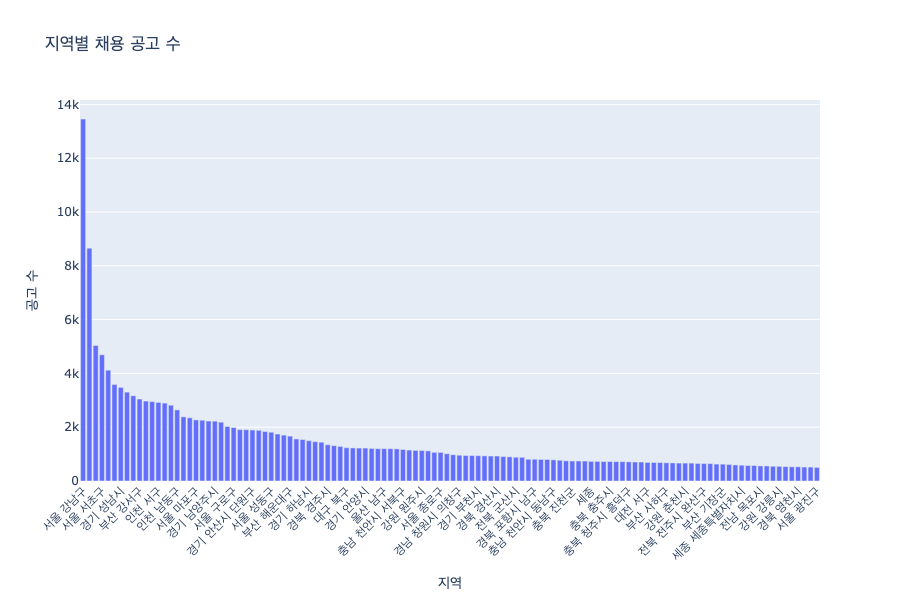
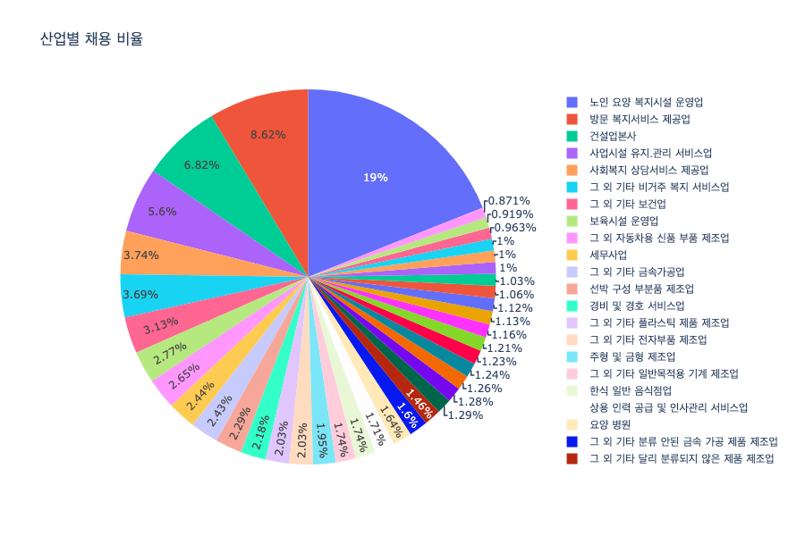
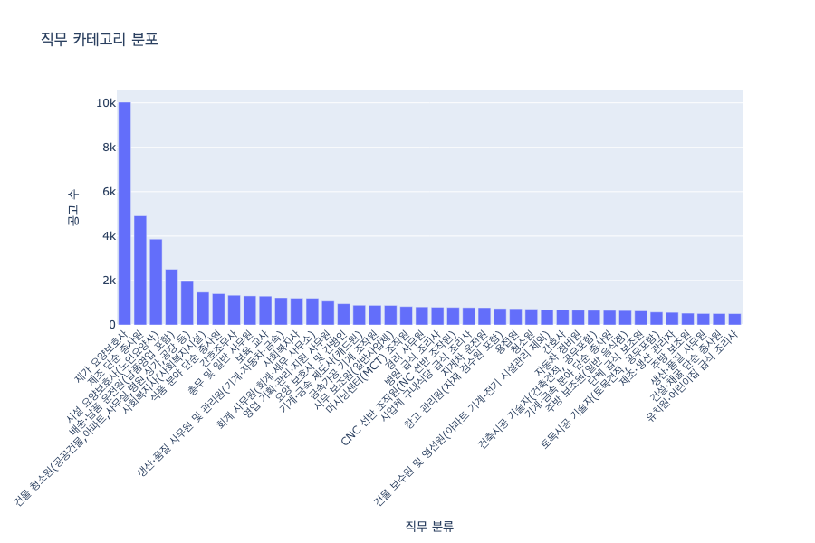
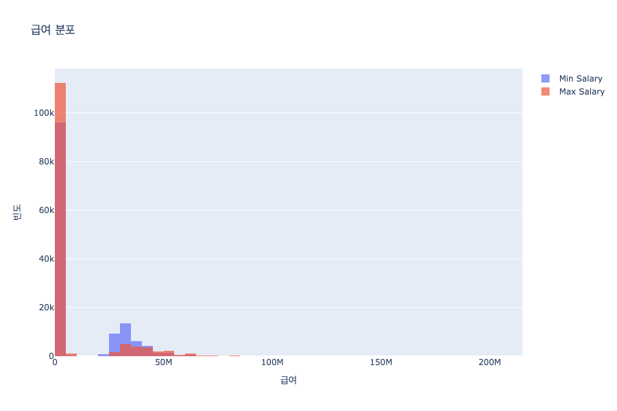
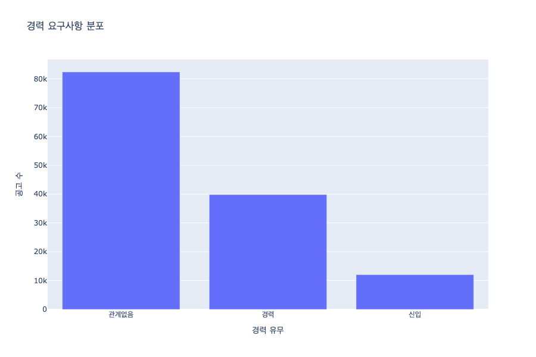
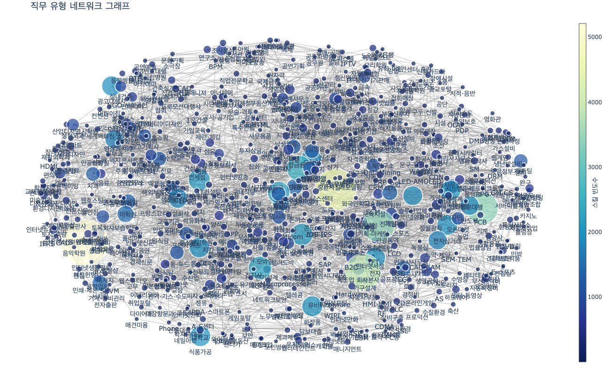

주요 기술 및 트렌드
- 자동차 및 AS 관련 산업:
- A·S센터, 주유·LPG, 중정비 등이 주요 기술로 언급됨.
- 자동차 및 관련 유지보수 서비스에서 중정비와 주유소 관리가 중요한 기술로 요구됨. 전통적인 자동차 정비 기술에 대한 수요가 여전히 존재함.
- IT 컨설팅:
- 셋업, DW(Data Warehousing) 등의 데이터 관리 역량이 중요하게 여겨짐.
- 데이터 웨어하우징(DW) 및 시스템 셋업이 IT 컨설팅 분야에서 중요한 기술로 부각됨. 데이터 관리 및 분석 역량이 중요한 요소로 작용함.
- 가구·목재·제지 산업:
- 부엌가구, 가구 등의 기술이 주요하게 언급됨.
- 가구 제조업에서 부엌가구와 관련된 기술이 특히 중요하게 평가됨. 맞춤형 가구 제작 기술의 수요가 높은 것으로 나타남.
- 건설·건축·토목·시공:
- 군건설, 건축, 도로·항만 관련 기술이 주요하게 언급됨.
- 대형 건설사(1군 건설)에서 요구되는 기술과 더불어 도로 및 항만 건설 관련 기술이 중요하게 나타남. 인프라 개발에 대한 수요가 지속적으로 증가하고 있음.
- 게임 산업:
- 게임 개발, 게임 시나리오 작성의 기술이 주요하게 언급됨.
- 게임 개발과 시나리오 제작 기술이 게임 산업에서 중요한 요소로 평가됨. 창의적인 콘텐츠 개발 역량이 부각됨.
결론
현재 채용 시장에서는 기술적인 역량(특히 데이터 관리 및 분석 역량, IT 컨설팅 관련 기술), 자동차 정비 기술, 그리고 대형 인프라 구축 기술의 보유 여부가 중요한 요소로 작용하고 있다.
또한, 해당 산업에 특화된 기술과 경험 외에도 창의성, 문제 해결 능력, 그리고 협업 능력이 중요한 평가 요소로 여겨지고 있다.
이러한 트렌드는 기업들이 업무의 정확성, 효율성, 그리고 급변하는 시장 환경에서의 경쟁력을 높이기 위해 이러한 기술과 특성을 가진 인재를 선호하고 있음을 반영하고 있다.





